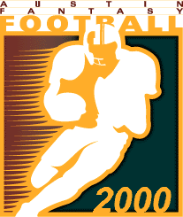

| Weekly/Yearly Honors | |
|---|---|
| * | |
| * | Most points in a game (year) |
| * | Fewest points in a game (year) |
| * | Most lopsided victory (year) |
| Week 1 NFL Schedule |
|||
|---|---|---|---|
| Got Sheep? | 40 | Enlightened Rogues | 25 |
| Purple Helmeted Soldiers of Love | 24 | Beer 'n Broads | 9 |
| Da'renegades | 51 | ATM | 19 |
| Ball Busters* | 56 | Itchy Tortugas | 11 |
| Horny Toads | 43 | Chmura Defense Fund | 33 |
|
Got Sheep? stage a furious Monday night rally to overcome a 25-17 deficit and ruin the welcome back party for the Enlightened Rogues 40-25. The Rogues get a surprising nine points from the Miami Dolphin ground game, but it also fumbles six points out of the end zone and that blunder seems to take the wind out of the team's sails. The Sheep look to get things done on the ground (which is where sheep like to get "done") as they get 26 points from their running backs, including 100 receiving yards from their number one back and 201 rushing yards from their number two back. Looks like the Sheep's attempt to stay sober through the draft may have actually paid off. In a contest being dubbed as Snores Galore I, the newbie Purple Helmeted Soldiers of Love (let's not say "that's more than a mouthful" because that'd be disgusting) survive a battle of attrition and take out the newbie Beer 'n Broads 24-9. In a typical newbie move, the Helmets make some good late-round choices, getting 15 points each from their tenth, fourteenth, and fifteenth-round picks - just to leave all three on the bench. But it doesn't make a difference in this "game" because the other newbie leaves everybody on the bench except his kicker. Guess B'nB had a little too much of the first B and not enough of the second to make any decent draft picks, and could be in for a long season. Da'renegades get their usual two touchdowns and 100+ rushing yards from the league's overall first pick and it's almost enough to single-handedly wipe out the newbie ATM 51-19. The Renegades even waste a starting spot on Rickey Dudley and still manage to rack up the second highest point total and margin of victory for the week and look to be the class of the East. Da'ATM get a good percentage of their offense from a two-point conversion and suffer about as thorough an ass-whooping as some other local team got in South Bend this past weekend. The reigning ATM Bowl champion Ball Busters pound the Itchy Tortugas into submission 56-11. The two late-round picks by the Busters that the Torts owner didn't have on any of his charts each manage to score a touchdown, but they are not even needed in this rout as both the Buster's quarterback and kicker post more points than the entire Torts squad. The Torts set yet another standard for futility by not even registering a single touchdown. At least the Busters can sympathize with the Torts when it comes to wasting a first-round draft pick on Terrell Davis. The Horny Toads easily win their ninth consecutive regular season game by running over the Chmura Defense Fund 43-33. The Toads use their first five picks to draft running backs (because nobody in their right mind is going to call Daunte Culpepper a quarterback) and it shows as they rack up 42 of their 43 points on the ground. The Fund score 21 unanswered points Monday night but it's not enough to overtake the rampant amphibians. Once again the Fund owner manages to change his team name but not the quality of players drafted, and again looks to contribute heavily to the league's party fund. |
|||
| Week 2 NFL Schedule |
|||
|---|---|---|---|
| Got Sheep? | 49 | Ball Busters | 41 |
| Enlightened Rogues | 43 | Purple Helmeted Soldiers of Love | 31 |
| Beer 'n Broads | 35 | Da'renegades | 53 |
| Itchy Tortugas* | 4 | Horny Toads | 36 |
| Chmura Defense Fund* | 56 | ATM | 23 |
|
Got Sheep? remain undefeated as they escape unsheared from a close one with the Ball Busters 49-41. The Sheep pull a Culpepper when their quarterback scrambles for three rushing touchdowns, the amazing part being that this quarterback is 34 years old and white, much like the sheep the owner is so fond of. The Busters squander a three touchdown 291-yard day from their number one receiver by making some poor coaching decisions, including starting a receiver who didn't practice once all week - leave it to a woman to underestimate the severity of a groin pull. The Enlightened Rogues taste victory for the first time in almost two years by sheathing the Purple Helmeted Soldiers of Love 43-31. The Rogues silence the backlash from critics opposed to the benching of the team's first-round pick when his backup has a career day, throwing for five touchdowns and a two-point conversion. That's more than enough for the Helmets to handle, who for the second time in as many weeks fail to keep all starters healthy through the entire contest. In fact, the Purple owner has now usurped the Chmura owner as the league's official Kiss of Death, having lost his top two receivers for the year and his best kicker for 4-8 weeks in just the first two weeks of the season. Rumors abound in the Helmets' clubhouse, including one that the owner is changing the team name to Black and Blue Pawns of Pain. Da'renegades join Da'sheep atop the East with a 53-35 shellacking of Beer 'n Broads. The Renegades, sporting the number one ranked offense in the league, get two more touchdowns from the league's overall number one pick and 28 points from two players exploiting the pathetic 49er defense. Brews and bimbos continue their string of stupid newbie moves by benching last week starter Wheatley and his two touchdowns and leaving six points riding the pine when they switch defenses, but at least they prove they are capable of getting the ball into the end zone on occasions. The Horny Toads regular-season winning streak reaches double digits as they hop to the top in the West with a 36-4 pummeling of the hapless Itchy Tortugas. The Toads switch from ground attack to air attack, getting two touchdowns from a tight end with an unpronounceable name, and end up with three players and their defense that outscore all Torts starters combined. The Torts suffer yet another power outage when their quarterback leaves the game injured and one of their starting running backs spends the day hiking in the beautiful Rocky Mountains outside Denver, and still await their first touchdown of the season. The Chmura Defense Fund breaks into the win column by doubling-up ATM 56-23. Chmura's mile-high quarterback-receiver combination accounts for 33 points while two other Fund players rack up 17 points against the lowly 49er defense. ATM get 22 points from their quarterback, but everyone else takes the weekend off except for their all-star kicker, who registers the team's only other point. ATM continue to field the worst defense in the league and, if not for their mighty division rivals the Torts, the worst offense as well. |
|||
| Week 3 NFL Schedule |
|||
|---|---|---|---|
| Got Sheep?* | 50 | Beer 'n Broads | 15 |
| Enlightened Rogues | 26 | Itchy Tortugas | 15 |
| Purple Helmeted Soldiers of Love | 25 | Da'renegades | 24 |
| Ball Busters | 25 | Chmura Defense Fund | 23 |
| Horny Toads | 35 | ATM | 31 |
|
Much like the rest of America, the rich get richer and the poor get poorer as Got Sheep? stampede over the punchless Beer 'n Broads 50-15. The Sheep ride the shoulders of their top running back to the tune of 134 yards and three touchdowns, winding up with 32 points from the vaunted Rams offense to remain undefeated and sit alone atop the East with the league's best offense. The Broads continue to make one stupid newbie move after another, as they leave one of their quarterbacks and his five touchdowns resting comfortably on the bench and even give their most feared (and basically only) weapon - their starting kicker - the week off. The Enlightened Rogues enjoy their pseudo-bye week as they smack the five players who actually show up for the Itchy Tortugas 26-15. The Rogues try to keep things close by playing their quarterback and number two receiver against the Dolphin defense, but even though those two don't score a single point the rest of the team still proves to be too much for the undermanned Torts to handle. The Torts finally discover that getting into the end zone ain't all that bad and end up matching their point output for the entire season, but still allow their starting running back to roam aimlessly around the Rockies and even manage to have their starting kicker get lost in downtown D.C. Monday night. The Purple Helmeted Soldiers of Love knock Da'renegades from the ranks of the undefeated with a stunning come-from-behind 25-24 upset. Da'soldiers trail going into Monday night but get a touchdown from their quarterback late in the fourth quarter and it's just enough to scrape by the former division leader. Da'renegades watch helplessly as the league's number one draft pick enjoys his bye week tipping cows on farms outside Indianapolis, and nobody else on the team steps up to score more than six points. Commissioner Bowl I turns out to be a low scoring (a.k.a. boring) affair as the Ball Busters nip the Chmura Defense Fund 25-23. With players on both sides afraid to score touchdowns, it all boils down to a kicking contest in Foxboro which the Busters win (yawn) 3-1. Last week's Chmura pickup runs amok over the Raider defense for 187 yards, but his rookie mentality keeps him from actually crossing the goal line and scoring any real points. For the second week in a row the Busters get nothing from their running backs, and after the game the owner begins holding evening candlelight vigils praying for the speedy recovery of Fred Taylor. The rich get richer and the poor get poorer out West, too, where the still-undefeated Horny Toads squeak by the still-winless ATM 35-31. The Toads get two Monday night touchdowns from their number one running back to erase an eight point deficit and remain in sole possession of first place with the league's best defense, although it's easy to claim the best defense playing against offensive juggernauts like the Torts and ATM in consecutive weeks. ATM bet the farm on the Ismail brothers and it proves costly because the Missile takes the week off and the Rocket pulls a hammy just as things are getting interesting Monday night, but at least the third-string quarterback manages to throw for three touchdowns and keep the Toads on the edge of their seat 'til the very end. |
|||
| Week 4 NFL Schedule |
|||
|---|---|---|---|
| Got Sheep? | 20 | Purple Helmeted Soldiers of Love | 15 |
| Enlightened Rogues | 41 | Da'renegades | 35 |
| Beer 'n Broads | 27 | Chmura Defense Fund | 33 |
| Ball Busters* | 55 | Horny Toads | 48 |
| Itchy Tortugas | 7 | ATM | 34 |
|
Got Sheep? continue their roll towards a perfect season with a lackluster 20-15 victory over the Purple Helmeted Soldiers of Love. The Sheep only manage to have their kicker score on Sunday, but their one remaining starter, their number one receiver, finds the end zone on the opening drive Monday night and it's enough to eke by the helmeted ones. The love Nazis are just as pathetic, as they too don't get any points from their quarterback or running backs and only remain in the contest because their defense accounts for 40% of their offense. After the game Soldier players claim to have been in mourning because the official Kiss of Death struck a third receiver on the team, this time during practice. The players also voice their disapproval about the Purple owner benching the first three weeks' starting quarterback and his two touchdowns. The Enlightened Rogues hold on to send Da'renegades reeling to their second straight loss with a 41-35 triumph. Da'rogues get no points from their running backs, but everyone else manages to score as they jump out to an insurmountable 41-6 lead Sunday and take sole possession of second place in the East one game behind Got Sheep? Da'renegades can't blame the loss on a bye week this week, so instead they blame the defense as the offense racks up a good amount of points Monday night, but not enough to overcome such a large deficit. The Chmura Defense Fund escapes a close call with Beer 'n Broads 33-27. The Fund doesn't have anyone score in double digits, but everyone does manage to score at least three and that proves to be plenty for this contest. Suds 'n duds pull the ultimate in stupid newbie moves when they elect to play a kicker Monday night who had back surgery the preceding Monday, and team members rebel at the owner's inability to read the league's I-R report. In response, the league puts B'nB on double secret AIDS probation for fear that the players will get back at the owner by imitating him - getting drunk and screwin' anything with a pulse. Got Sheep? is the only team opposed to this sanction and, in fact, invite B'nB over for a good ol' fashioned Iowa hoedown later this week with all the Coors Light they can drink. In Teeter Totter Bowl I the Ball Busters restake a claim to first place in the West and the league's best offense as they knock the Horny Toads from the realm of the undefeated with a 55-48 victory. The Busters get four touchdowns and 336 passing yards from last year's league MVP to jump out to an early 40-12 lead. The Toads leap ahead 48-40 with 36 unanswered points thanks mainly to 20 points in the span of 62 seconds against the supposedly impenetrable Tampa Bay defense, including of all things a halfback pass for a touchdown. The Busters respond with 15 unanswered points of their own Monday night to claim the big W. Despite the win, the Busters file a grievance against one of the Toad receivers for his immature bush league midfield display in Dallas that remind most observers of a typical Mike Tyson incident, but with even less class. The blind pick on the blind as ATM flatten the worthless Itchy Tortugas 34-7. ATM finally break into the win column with four more touchdowns from their third-string quarterback and little from everyone else, but little is all that is needed when playing the powerful Torts. ATM even exhibit some quality gamesmanship when they try to keep things close by giving their number one draft pick, with his four touchdowns and 440 passing yards, the week off. For the third time in four weeks the stanky burritos are unable to find the end zone, and once again see their scoring average plummet into single digits. The league contemplates banning the Torts from further play this season, but decide against it so that teams like Beer 'n Broads can have something to look forward to. |
|||
| Week 5 NFL Schedule |
|||
|---|---|---|---|
| Got Sheep?* | 63 | Da'renegades | 18 |
| Enlightened Rogues | 26 | Beer 'n Broads | 39 |
| Purple Helmeted Soldiers of Love | 16 | Horny Toads | 61 |
| Ball Busters | 42 | ATM | 13 |
| Itchy Tortugas | 36 | Chmura Defense Fund | 35 |
|
Got Sheep? rebound from last week's dismal performance with an impressive 63-18 thrashing of Da'renegades. Da'sheep generate the season's highest point output to date by getting at least six points from every position player except one, but don't need any more in this rout than the 21 points put up by their kicker. Da'renegades try to take advantage of the sieve-like Cowboy defense by stacking their offense against Dallas, but the strategy backfires in a big way when their quarterback and both receivers get blanked by Da'boys. The Sheep remain undefeated and now enjoy a two game lead in the East while the Renegades, once sporting the league's best offense, now find themselves bumping butts with the newbies on the couch in the cellar. Beer 'n Broads break out the keg o' Lone Star Lite and chug like there's no tomorrow after earning their first W against the Enlightened Rogues 39-26. B'nB finally figure out that a kicker with a broken back is probably not the best choice for a starter, but still exhibit some of their amazing newbie naïveté by electing to play both a running back and receiver listed as out on the I-R report. Fortunately, their number one pick isn't injured and catches hold of a career day with three touchdowns and 168 receiving yards. The Rogues owner no longer seems so enlightened as, for the second time in three weeks, his Raven quarterback-receiver tandem gets blanked, this time at the hands of one of the NFL's lesser defenses. The Beer turn out to be the only team in the East to not lose ground to Got Sheep? while the Rogues fall two games behind and sport by far and away the worst offense and defense of any team with a winning record. The Horny Toads smash the Purple Helmeted Soldiers of Love into a plenitude of penile pieces with a 61-16 demolition. The Toads bring all weapons to bear on the helpless Helmets when every position player scores at least six points to tie this year's largest margin of victory and recapture the luster as the league's best offense. The lavender losers get one quarterback-receiver touchdown out of the Arizona desert and a few points chipped in by their kicker, but the rest of the team runs and hides shortly after the opening kickoff to avoid the impending bitch-slapping. The Toads hold on to their first place tie in the West while the Soldiers sink even farther into the mire in the East with that division's worst offense. The Ball Busters keep pace with the Horny Toads in the West with a 42-13 pounding of ATM. As usual, the Ball Busters only have a couple players actually show up for the game, but, as usual, it helps when one of them is last year's league MVP who throws for four touchdowns and 390 yards. The Busters even decide to take it easy on the division's only newbie by yanking their quarterback halfway through the third quarter. ATM get a little cocky and decides to let last week's lineup ride after pummelling the Itchy Tortugas. Unfortunately, one of last week's running backs has a bye week this week, and, in honor of him, the rest of the team decides to play like it's their bye week too. ATM now join the Itchy Tortugas all the way at the bottom of the West thanks in part to the league's worst defense. The Itchy Tortugas finally break into the win column by contributing a check payable to defeat to the Chmura Defense Fund 36-35. The Torts almost match their offensive output for the first four games thanks mainly to their quarterback's four mile-high touchdowns. They then spend all day Monday with the team psychiatrist in an attempt to help them cope with that queasy feeling of actually being ahead in a game after Sunday, and all night Monday high on Pepto Bismol while rooting against the Kansas City defense. The Fund get lots and lots of performance points (4, 4, 3 and 3) but little else in becoming the first suckas to fall victim to the Torts. The Itchy ones, combining the league's worst offense with the second worst defense, still average getting outscored by 22.8 points per game, but it doesn't seem to make a difference when beating up on one of the Commissioners. |
|||
| Week 6 NFL Schedule |
|||
|---|---|---|---|
| Got Sheep?* | 52 | ATM | 35 |
| Enlightened Rogues | 17 | Ball Busters | 39 |
| Purple Helmeted Soldiers of Love | 9 | Itchy Tortugas | 27 |
| Beer 'n Broads | 20 | Horny Toads | 33 |
| Da'renegades | 36 | Chmura Defense Fund | 32 |
|
Got Sheep? make it 40% of the way towards the league's first perfect season with a 52-35 thrashing of ATM. The woolen herd have their number one running back take a bye week and play their number two running back despite him taking a sick week, but still get at least nine points from the four players who score including 23 from their quarterback. ATM refuse to turn in a lineup for the third straight week and ends up playing a wide receiver with a bye, but still manages to keep the game somewhat close thanks to four touchdowns and 336 passing yards from their fifteenth-round pick. The Sheep jump out to a whopping three game lead in the East and now sport the league's best offense and defense, while ATM need to overcome the nostalgia of habitually playing their winning lineup from week four because, let's face it, not every team is the Torts. The Ball Busters pull several rabbits out of their hat and stupefy the Enlightened Rogues 39-17. For the first time since week one the nutcrackers start a running back that scores some points and also get 15 points from the kicker who has taken over as the Ravens' only source of offense, and the owner is rushed to the emergency room late Monday night after fainting from the realization that it is possible to win without Warner. For the third time in four weeks the Rogues' Baltimore quarterback-receiver tandem gets blanked, and the rest of the starters decide that if those two lackeys don't have to put in the effort then neither do they. The Busters remain in a first place tie out West with the Horny Toads while the Rogues' .500 mark leaves only three teams in the league with winning records. In a scene right out of the sci-fi classic "When Worst Offenses Collide" the Itchy Tortugas double their victory total with a 27-9 bombing of the Purple Helmeted Soldiers of Love. The Torts start their number one receiver, even though he rests his boo-boo for yet another week, and get absolutely no performance points but still come up with the W when three different players register touchdowns. The Helmets jump in their foxhole and wave their little white flag long before the opening kickoff even comes down, getting one solitary touchdown from Geriatric Rice and three pathetic PATs. The Tortugas seem to have put their laughable beginning behind them as they leave ATM alone in the West's basement while the Helmets find their season reaching a critical point as they fall four games behind in the East. The Horny Toads wipe their butts on the East's doormat Beer 'n Broads 33-20. The Toads suffer an opening drive crisis when their quarterback gets injured after going 0-fer-1, but still leap out to a 33-0 lead which proves to be too large a deficit for the drunken skanks to overcome. In what appears to be yet another in a long line of stupid newbie moves, the emboozened bimbos pass out and sleep through the 4:30PM lineup deadline and end up playing a quarterback and defense enjoying bye weeks and a running back and wide receiver enjoying hospital beds. As a result their only statistic from Sunday is two carries for -6 yards, and the tardiness costs them 15 points and the win. The Toads keep apace with the Ball Busters in the West, three games ahead of the nearest competition, while B'nB remain alone in the cellar in the East. Da'renegades snap their three game losing skid by edging the Chmura Defense Fund 36-32. Da'renegades get double-digit point totals from their quarterback and kicker, but it's their defense's eight points that clinch the victory. Da'fund get 18 points from their quarterback and ten more from their number one pick, but that's about it as, for the second week in a row, they play the part of punching bag and generously allow their opponent to break a rather lengthy losing streak at their expense. The Renegades get back to the .500 mark and find themselves tied for second in the East three games out, while the Fund also find themselves three games out and in sole possession of third place in the West. |
|||
| Week 7 NFL Schedule |
|||
|---|---|---|---|
| Got Sheep? | 41 | Itchy Tortugas | 22 |
| Enlightened Rogues | 40 | Horny Toads | 72 |
| Purple Helmeted Soldiers of Love | 41 | Chmura Defense Fund* | 74 |
| Beer 'n Broads | 46 | ATM | 17 |
| Da'renegades | 48 | Ball Busters | 41 |
|
Got Sheep? bring the Itchy Tortugas back down to Earth with a harsh 41-22 reality check. Every position player on the Sheep squad scores, with highlight reel footage provided by their first-round pick who racks up one touchdown, two two-point conversions, and 208 rushing yards. The Sheep even lose their kicker early in the first quarter after a lone PAT, but it doesn't make a difference with the Torts lined up opposite them. Once again the scoring threat for the Itchy ones comes in the form of a kicker, as only two players manage to wander into the end zone one time apiece. The transaction-happy Torts are so desperate to find some offense that they spend 67 cents per carry on the wrong running back. Got Sheep? remain undefeated and three games up in the East while the Tortugas fall four games behind in the West. The Horny Toads put on a scoring clinic and pulverize the Enlightened Rogues 72-40. Every position player on the Toad squad scores as they have their quarterback and number two running back find the end zone three times apiece, and get another two touchdowns from the receiver who has a Cowboy bounty on his head. Things go so well for the Horndogs that they even have a pass fall into one of their receiver's lap while he's sitting on his ass in the end zone. The Rogues finally switch to a different quarterback-receiver combination, but the one touchdown they get is not nearly enough to keep up with the rampaging amphibians. The Horny Toads own the top ranked offense in the league and retake sole possession of first place out West while the Rogues find themselves four games out in the East. The Chmura Defense Fund bring out their high priced attorneys and sue the Purple Helmeted Soldiers of Love to the sum of 74-41. Every player on the Fund squad scores, with the most damage coming from three touchdowns out of their quarterback-receiver duo which helps lead to 51 mile-high points. The limp lieutenants score their most points so far this season, including one quarterback-receiver hookup of their own, but still they <PUN>come up</PUN><PUN>way short</PUN> in this contest. In missing the league record for most points in a game by a single point, the Fund manage to remain three games behind the Horny Toads out West while the Helmets are tied for last place, five games behind in the East. In the battle of the cellar-dwellers (a.k.a. Handicapped Bowl I) Beer 'n Broads use their crutch to beat the wheelchair-bound ATM into submission 46-17. Suds get good outings from everyone in generating their highest point output of the season, including two touchdowns and 144 rushing yards from their number one back. ATM finally send in a new lineup and it costs them as they bench their third-string quarterback and his 27 points in favor of their number one pick and his six points. It still wouldn't have been enough, however, as the ATM owner is too cheap to rent a kicker for a few days while the team's only kicker enjoys his bye week basking on the Miami beach. B'nB remain in the East dungeon but no longer share the league's worst record - that "honor" now belongs solely to ATM. Money may not buy love, but it can buy a victory as Da'renegades run amok over the Ball Busters 48-41. Da'banditos get nada from their quarterback and receivers, but fortunately for them their running backs go up against some pretty porous defenses as their number one back racks up three touchdowns and 219 rushing yards against the Seattle Sieves and the back they spend $2 on earlier in the week scores two touchdowns against the San Francisco High Homos. Da'busters race out to a 35-0 lead thanks in part to the usual 23 points from their quarterback plus their first two 100-yard rushing performances of the season, but then see all hopes of coming back go down the drain Monday night when their number one receiver leaves the game early in the first quarter. Da'renegades attain the league's fourth winning record and remain three games behind in the East, while the Busters fall one game out in the West. |
|||
| Week 8 NFL Schedule |
|||
|---|---|---|---|
| Got Sheep? | 59 | Chmura Defense Fund | 44 |
| Enlightened Rogues | 20 | ATM | 55 |
| Purple Helmeted Soldiers of Love | 18 | Ball Busters | 23 |
| Beer 'n Broads* | 74 | Itchy Tortugas | 40 |
| Da'renegades | 42 | Horny Toads | 60 |
|
Got Sheep? make it over half of the way towards the league's first perfect season with a 59-44 triumph over the Chmura Defense Fund. For the second straight week every player in the Sheep flock scores, and they also attain an unusual feat when three players earn performance points for 100-yard receiving days. The Fund get points from every player except one - their number one pick, who nets only one carry for four yards before getting banged up - and the owner is left mumbling "coulda/woulda/shoulda played Stewart for the W." Thanks in part to the league's best defense the Sheep now own a commanding four game lead over Da'renegades in the East while the Fund fall four games behind the Horny Toads in the West. ATM gets back into the win column for the second time this year with a 55-20 plastering of the Enlightened Rogues. ATM's number one pick starts again this week despite grumblings from some of the players, but he finally outscores their number fifteen pick three touchdowns to two, and one of the ATM receivers throws in a long rushing touchdown for good measure. Thanks to a bye week and some poor planning the Rogues are stuck without two of their top three picks and their replacements, the ill-reputed Baltimore quarterback/receiver tandem, combine for only three points (which is three more than the usual) and, to add insult to injury, both of their running backs get blanked. ATM remain in last place in the West but no longer carry the sole burden of the league's worst record, while the Rogues fall yet another game behind Got Sheep? in the East. The Ball Busters overcome a good dose of adversity to defeat the Purple Helmeted Soldiers of Love 23-18. The Busters lose last year's MVP in the first half after he passes for the team's only touchdown, but the NFL's newly-crowned all-time leading scorer kicks the Helmets square in the nuts with 11 points and it's just enough to scrape by. The junior johnsons <PUN>rise</PUN> to their feet in exaltation when the Buster quarterback busts his finger, but the celebration <PUN>comes prematurely</PUN> as they are only able to eke out two touchdowns from a pair of old geezers. The Busters pray for a medical miracle as they remain one game behind the Horny Toads in the West while the Soldiers take over sole possession of last place in the East and try to overcome the league's biggest deficit at six games. Beer 'n Broads exchange their crutch for a whoopin' stick and use it and reuse it and use it again to pummel the Itchy Tortugas into a bland Mexican paste 74-40. Every Broad scores at least nine points, with the knockout punch coming from their number one running back in the form of three touchdowns and 156 yards. The floundering Torts are able to muster a single highlight when one of their backs racks up two touchdowns and an NFL-record 278 yards rushing as he finds more gaping holes in the Denver defense than at a convention for old retired French whores. Beer tie the season high for most points in a game and remain five games out of first in the East while the Tort's two-game winning streak is now just a distant memory as they fall back into the West's cellar. The Horny Toads remain perfect against the East division as they beat up on Da'renegades 60-42. Da'toads get three touchdowns and a two-point conversion from the quarterback of the NFL's only remaining undefeated team, and toss in two receiving touchdowns from a running back with an unspellable name. Da'renegades get 21 points out of their quarterback and 15 more from the league's number one pick, but their kicker is the only other player who decides to contribute to the team's cause. The Toads still own the league's best offense and remain one game up on the Ball Busters in the West while the Renegades fall four games out of first in the East. |
|||
| Week 9 NFL Schedule |
|||
|---|---|---|---|
| Got Sheep? | 50 | Horny Toads* | 51 |
| Enlightened Rogues | 12 | Chmura Defense Fund | 14 |
| Purple Helmeted Soldiers of Love | 19 | ATM | 28 |
| Beer 'n Broads | 50 | Ball Busters | 10 |
| Da'renegades | 28 | Itchy Tortugas | 29 |
|
In what is looking more and more likely to be a preview of ATM Bowl XI the Horny Toads scrape by Got Sheep? by the hair on their warty ass 51-50. The Toads have two players shutout by the league's best defense but a Polish punk kicks 15 points through the uprights and the defense scores a touchdown, and it's all needed to knock the mighty mutton from the ranks of the undefeated. The Sheep take a 50-45 lead into Monday night after getting touchdowns from every position player except the quarterback, including four from their number one pick, but the defense surrenders a touchdown to the Toad's number one pick late in the third quarter and it costs them the game. The Toads now own the best record in the league (thanks to having the tiebreaker) and a two game lead in the West while the Sheep still maintain a comfortable four game lead in the East. In the "battle" between the league's two oldest franchises (a.k.a. Geriatric Bowl I) the Chmura Defense Fund lulls the Enlightened Rogues to sleep 14-12 as a combination of major cataracts and failing memory prevents both teams from finding the end zone. The Fund gets six points from their kicker, two 100-yard performances from their receivers, and the winning margin of a safety from their defense. The Rogues get nine points from their kicker and one 100-yard performance from a receiver. These accounts may not be 100% accurate, however, as they are only reported through hearsay because the attendance for this game was zero. Yes, not even the players showed up. Chmura remains four games out in the West while the Rogues remain five games out in the East. ATM generate their first winning streak by circumcising the Purple Helmeted Soldiers of Love 28-19. ATM get three touchdown passes from their number one pick and little from anyone else, but they realize as most other teams in the league now do that only a couple of players are really needed against the Soldiers. The flaccid foreskins trail 28-7 going into Monday night and stage what appears to be a furious rally, but it <PUN>falls short</PUN>. Once again the owner's patented Kiss of Death strikes a receiver (the fourth this year) although the <PUN>blow</PUN> should not have been <PUN>hard</PUN> enough to knock him out for the year. ATM keep their slim playoff hopes alive while remaining five games behind in the West, but the Soldiers now own the worst record in the league and find themselves six games behind with only six games to play. In the only game whose outcome is decided long before Monday night Beer 'n Broads pour alcohol over the Ball Busters and light them afire 50-10. The Broads get touchdowns from their defense and four different players, including two plus 137 receiving yards from their mid-season acquisition, and even take it easy by leaving their "hurt" quarterback and his 21 points on the bench, although inside sources say he didn't play because the owner still cannot read an I-R report. The Busters try and give their ailing team a face-lift but the money is not well spent as, like most face-lifts, the face looks better but the rest of the body is still butt-ugly. The owner wastes $2 on the Chief back-du-jour and another $2 on a Heisman has-been, but who woulda thunk that a lowly quarterback averaging less than one touchdown per game would tear the "mighty Minnesota defense" a new - correction, 11 new - ass holes en route to four passing touchdowns. The Brews winning streak reaches three as they move into a second place tie in the East while the Busters maintain a tentative grasp on second place in the West. The Itchy Tortugas nab Da'renegades at the last minute 29-28. Da'torts trail 28-23 going into Monday night after seeing their Ram receiving duo shutout, but every other player gets one touchdown including the game winner from their quarterback early in the fourth quarter. Da'renegades get 15 points from their backup-turned-starting quarterback and nine more from the league's overall first pick, but the kicker is the only other player not to get blanked. The Torts owner buys himself a victory Friday when the $2 he spends on a Buffalo rookie nets six points, while the outlaws owner now realizes what the rest of the league has already known - Green ain't no Warner. The Torts remain five games behind in the West while the Renegades trail by four games in the East. |
|||
| Week 10 NFL Schedule |
|||
|---|---|---|---|
| Got Sheep? | 38 | Enlightened Rogues | 60 |
| Purple Helmeted Soldiers of Love | 21 | Beer 'n Broads* | 67 |
| Da'renegades | 45 | ATM | 34 |
| Ball Busters | 39 | Itchy Tortugas | 23 |
| Horny Toads | 27 | Chmura Defense Fund | 25 |
|
The Enlightened Rogues halt their losing streak at five with a 60-38 neutering of Got Sheep? The Rogue players take a team vote and elect to kick ewe ass after they hear their owner congratulate the Sheep owner on a big victory prior to the game. The result is that every position player scores at least six points, with 15 coming from a brilliant last-minute lineup change. The Sheep flock to a 30-30 tie after Sunday's action thanks to four touchdowns from their quarterback, but both receivers are blanked, their number one pick bails out on the team just before kickoff, and they are unable to keep the Rogues out of the end zone Monday night. Even though the Rogues are two games under .500 they still maintain a winning record versus division opponents while a two game losing skid has the Sheep searching desperately for chastity belts in fear of owner retribution. Beer 'n Broads keep the suds flowing with a 67-21 thrashing of the impotent Purple Helmeted Soldiers of Love. Brewskies 'n floozies party it up after every player scores, including three touchdowns from their quarterback who racks up more yards (504) and points (25) than every Purple Soldier combined. The limp lovesticks are stuck with a single option at quarterback while the other two on the roster both suffer from slight touches of the Kiss of Death, and he comes through with the expected zero points as once again the kicker proves to be the team's only threat with 12. After the year's most lopsided victory to date the Beer pull to within three games of Got Sheep? while the Helmets are starting to hear the nails being driven into the coffin as they hold on to the league's worst record. Da'renegades even up their record at five up five down with a 45-34 victory over ATM. Da'bandits get two touchdowns and 431 passing yards from their short-term starter, two touchdowns from the league's top pick and a touchdown from each receiver. ATM also get 17 points from their quarterback and 11 more from their kicker, but the only other score is a rushing touchdown by a receiver who ends up with two carries for -3 yards - that other carry must have been dreadful. Despite having the worst defense in the league the Renegades get to within three games of Got Sheep? in the East while ATM remain in the West basement along with the Torts. The Ball Busters discover that there is life after death, er Warner, as they roll over the Itchy Tortugas 39-23. The Busters are without their top three picks due to byes and boo-boos, but get three touchdowns from a quarterback who had only nine coming into the game and two more from a mile-high receiver. The Torts finally get a full game out of their number one pick and he responds with his first 100-yard rushing day since Super Bowl XXXIII and a touchdown, but unfortunately it ends up being the team's only touchdown. The Busters now boast the league's best defense and remain two games out while the Torts keep pace with ATM for the worst record in their division. The Horny Toads overcome a ten point Monday night deficit to leap over the Chmura Defense Fund 27-25. Both of the Toad receivers get shutout and their kicker comes down with a nasty case of foot herpes and misses the contest altogether, but they still have enough left in the tank to get by the bankrupt Fund. Chmura get two touchdowns and 327 passing yards from their DUI poster child, but their only other real highlight is winning the kicking contest 1-0. The Toads now have the best record to accompany the best offense in the league while the Fund need to start thinking about positioning themselves for next year's draft order. |
|||
| Week 11 NFL Schedule |
|||
|---|---|---|---|
| Got Sheep? | 34 | Ball Busters | 25 |
| Enlightened Rogues | 32 | Purple Helmeted Soldiers of Love | 22 |
| Beer 'n Broads | 18 | Da'renegades* | 50 |
| Itchy Tortugas | 19 | Horny Toads | 47 |
| Chmura Defense Fund | 21 | ATM | 38 |
|
After a two week respite Got Sheep? return to their winning ways with a 34-25 victory over the stumbling Ball Busters. The Sheep quickly find themselves down 25-0 but keep their pelts on as they narrow the margin to 25-24 following Sunday's action and then sneak away with less than two minutes to go in the fourth quarter Monday night on the strength of their quarterback. The Busters fall to 1-2 WOW (without Warner) as they get the usual 20 or so points from non-quarterbacks, but only six from the starting quarterback chosen via the ever popular coin toss method. The Sheep maintain a three game lead in the East while the Busters fall three games out in the West. The Enlightened Rogues enjoy a break in the schedule as they defeat the Purple Helmeted Soldiers of Love 32-22. For the umpteenth time this season the Rogues see their starting quarterback-receiver duo (cheeseheads this week) get blanked, and then watch in horror as their kicker misses four critical points at the end of the game, but the surprising Miami Dolphin ground game puts another 12 points on the scoreboard to save the day. Already conceding their season, the drooping dumbsticks trade away their most feared offensive weapon - their kicker. His replacement does manage to catch a touchdown and 119 yards, but the rest of the team is a virtual no-show, especially the ex-Ivy League quarterback they buy at a Miami rummage sale for $2. The Rogues remain four games behind with four games to play while the Soldiers fall seven games out but are still not mathematically eliminated because one of their two wins came against the second place Da'renegades. Da'renegades rudely awaken Beer 'n Broads from dreamland with a 50-18 annihilation. Da'outlaws get four passing touchdowns plus a rushing touchdown from their quarterback pro tem and toss in another 20 points from their pair of Hoosier cornhuggers to crush Beer's cans. Da'broads are left with bitter beer faces as they start a broken running back, their KC quarterback-receiver duo are shutout by the <SARCASM>mighty</SARCASM> San Francisco pass defense, and their defense accounts for one-third of their offense. And to add insult to injury, er injury to insult, the Beer lose their number one running back for 6-8 weeks, which is well beyond the end of their season. The Renegades break the second place tie with B'nB and remain three games out, but need to start thinking about what they'll do when their quarterback's work visa expires after next week's game. The Horny Toads clinch the league's first playoff berth by flattening the lifeless Itchy Tortugas 47-19. The Toads get three touchdowns and 302 yards from the arm of their quarterback and another touchdown from his legs, and those 27 points are more than enough to single-handedly eliminate the Torts. The titillating tortillas do manage a few touchdowns, but their game effort is best summed up by their kicker, who misses two field goals and ends up with one point. The Toads' win streak reaches six as they open up a three game lead while the Torts remain in the dungeon along with ATM. ATM reach out of the grave to pull the Chmura Defense Fund under with a 38-21 victory. ATM return to their old ways by not turning in a lineup, but still manage to score well when both running backs find the end zone and rack up over 100 yards. The Fund trails 29-6 going into Monday night after they elect to place all their eggs in the Denver basket, and the bottom falls out as their quarterback, kicker, and receiver combine for a dismal 15 points. ATM joins the Fund in third place, six games behind the Horny Toads. |
|||
| Week 12 NFL Schedule |
|||
|---|---|---|---|
| Got Sheep? | 24 | Beer 'n Broads | 37 |
| Enlightened Rogues | 39 | Itchy Tortugas | 16 |
| Purple Helmeted Soldiers of Love | 19 | Da'renegades | 26 |
| Ball Busters | 27 | Chmura Defense Fund*** | 93 |
| Horny Toads | 25 | ATM | 33 |
|
Beer 'n Broads dunk the branding iron in Old Milwaukee and sizzle Got Sheep? 37-24. The Broads regress to their stupid newbie ways by not turning in a lineup AND not reading the I-R report and end up starting two running backs laid up in hospital beds, yet every player who is capable of playing scores. The Sheep appear to be high on mating season pheromones as half the team gets shut out and the other half stumble randomly about and only manage to break the plane of the goal line three times. Beer remain one game behind in the wildcard race while the Sheep have to wait at least one more week to clinch the East. The Enlightened Rogues pour talcum powder all over the Itchy Tortugas and totally eliminate the league's diaper rash 39-16. The Rogues leave their number one pick on the pine even though he's healthy but get two touchdowns from the quarterback they picked up on waivers last week and 15 points from another running back named Smith. The Torts start a quarterback with a bum thumb and their number one pick who wimps out of the game at the last moment, and subsequently don't find the end zone at all for the fourth time this season. The Rogues stay within one game in the wildcard hunt while the Torts see their playoff hopes dashed mercilessly on the rocks as they stake claim to the league's worst offense and defense. Da'renegades have to rely on a Monday night comeback to Bobbitize the Purple Helmeted Soldiers of Love 26-19. Da'runaways get zero Sunday touchdowns to trail 19-10 going into Monday night and then start the wrong backup quarterback for the evening, but not a whole lot of points are necessary when facing the Love Bugs and the loaner quarterback they do use manages to generate enough offense to scrape by. Da'soldiers Kiss of Death is alive and well, thank you, after claiming their starting quarterback on the first play of the game and their only other healthy quarterback twice, and their lone highlight is another touchdown and 100+ yards from the receiver they recently traded for. The Renegades are in a first place tie for one of the two wildcard spots and need to start sticking pins in their Warner voodoo doll while the Helmets' season is finally euthanized thanks in big part to owning the league's second worst offense and defense. Commissioner Bowl II turns out to be one - uh, two - for the record books as the Chmura Defense Fund uses an atomic bomb to blow up the Ball Busters' anthill 93-27. In setting the league record for most points in a game AND most lopsided victory, every Chmura position player scores, with five touchdowns and 462 passing yards coming from a Pus Pot picked off of waivers last week and another 21 points put in by Boy George. Heck, three of the Fund players account for ALL of their NFL team's touchdowns (Denver's 5, Tennessee's 3, Kansas City's 2). Thanks to woman's intuition the Busted owner senses the approaching carnage and sends out five reserves to absorb the beating, leaving her starters intact but a career day of four touchdowns and 234 rushing yards from her number one back sitting on the bench. But it would have taken a whole team of Taylors to have any shot at the Fund on this day. The Fund remain two games out in the wildcard chase with three to play while the Busters now find themselves tied for the wildcard lead. ATM climbs aboard their ATV and tear through the swamp, squishing every Horny Toad in sight 33-25. Although late in the season, the money machines finally seem to find the secret to their success - don't turn in a lineup and don't make any transactions (in other words, don't do anything that might expose coaching inadequacies) - and use Week 10's lineup to get three touchdowns from their quarterback and one from each receiver. The Toads get 22 points from their quarterback and - well, nothing, as the rest of the team spends all weekend hitting on minors at the Tadpole Tramps convention. ATM pulls to within two games in the wildcard chase while the Horn Dogs have to wait awhile to wrap up the West. |
|||
| Week 13 NFL Schedule |
|||
|---|---|---|---|
| Got Sheep?* | 51 | Purple Helmeted Soldiers of Love | 37 |
| Enlightened Rogues | 28 | Da'renegades | 23 |
| Beer 'n Broads | 31 | Chmura Defense Fund | 41 |
| Ball Busters | 47 | Horny Toads | 23 |
| Itchy Tortugas | 20 | ATM | 40 |
|
Got Sheep? blow - uh, blow away - the Purple Helmeted Soldiers of Love 51-37. Every Sheep position player scores except for their number one pick, with 16 points coming from a Baltimore rookie running through Brownies and a pair of 12's thrown in for good measure from the number one receiver and quarterback. The Soldiers jump out to a 13-0 Thanksgiving lead but then get smacked on the lips by the Kiss of Death as all four quarterbacks call in sick and their old Dallas running back gets K-O'd in the third quarter - the only reason the final score is even close is their defense finds the end zone twice. The Sheep become the first team to clinch their division while the lowly Helmets see their losing streak grow to double digits. The Enlightened Rogues' winning streak reaches four as they arrest Da'renegades 28-23. The Rogues are the only team to win after snaring a Thanksgiving lead, and do so despite starting a broken Smith running back because the other Smith running back scores nine on Thursday and they get 12 more Sunday from a Tampa Bay castaway. The Frito banditos get 12 points from one Green and six points from the other, but their receivers combine for one reception for -3 yards to seal their fate. Both teams are tied for the second wildcard spot but face serious quarterback problems next week as the Rogues' only reliable arm takes a bye week and Da'renegades' two good arms both return to their roles as overpaid bench warmers. The Chmura Defense Fund totals less than half of last week's output but still sobers up Beer 'n Broads 41-31. The Fund doesn't get double digits from anyone, but the defense scores six and they get a rushing touchdown from a receiver and 109 receiving yards from a rusher. For the second consecutive week the aimless alcoholics only field four of the six position players and squander a 15-6 Thanksgiving lead when their quarterback sits out with a dangling digit and they waste $2 on a running back who doesn't even suit up. Both teams are one game behind in the hunt for the last wildcard spot; Chewy may be stuck with all their eggs in one basket by starting four Broncos next week and could make it five if they spend $2 on the Denver D that scored this week, while the Beer have to face reality in the form of three little words: eye, are, report. The crippled Ball Busters outhobble the crippled Horny Toads to the prescription counter 47-23. The Busters finally make a good investment when they pick up the new N'orleans quarterback and his 18 points, and get 14 more from the NFL's leading scorer. For the second consecutive week the Toadies get nada from their running backs and receivers as they waste a 12-0 Thanksgiving lead when their number one pick spends his Sunday roaming the sidelines and everyone else remains in jail after getting busted at last week's convention. The Busters are back in front of the wildcard race as they revel in next week's return of last year's league MVP while the Toads will have to wait yet another week to wrap up the division. ATM becomes the proud papa of a three-game winning streak as they double up the Itchy Tortugas 40-20. For the third straight week ATM doesn't change the lineup and it pays off again as every position player scores, with all four running backs and receivers getting six each and the quarterback adding 12 - who needs performance points when playing the Torts? The troubled tacos play their quarterback and a receiver on Thanksgiving day and race out to a 0-0 lead, then stink it up even more on Sunday when their number one pick sits on the bench with an unknown pain, but at least manage to get 15 points from a Cincinnati rusher to make it somewhat respectable. ATM remains one game out of the final wildcard spot while the Torts look to claim their league "best" fourth first pick in the second round of next year's draft. |
|||
| Week 14 NFL Schedule |
|||
|---|---|---|---|
| Got Sheep? | 21 | Da'renegades | 17 |
| Enlightened Rogues* | 59 | Beer 'n Broads | 21 |
| Purple Helmeted Soldiers of Love | 29 | Horny Toads | 35 |
| Ball Busters | 31 | ATM | 33 |
| Itchy Tortugas | 32 | Chmura Defense Fund | 23 |
|
Got Sheep? lift their legs and relieve themselves all over Da'renegades playoff hopes with a narrow 21-17 victory. Da'sheep are almost caught in the stable with their pants down, but zip up in time to get one touchdown apiece from three players to eke out the win. Da'renegades lose one of their receivers with a bum back before the game even starts and it costs them dearly as they only manage to get two touchdowns from one of their scavenged players, a running back. The Sheep still boast the league's best defense, as D'outlaws can attest, and wait to see who they will face in the first round of the playoffs while Da'renegades are one game behind in the wildcard chase with one game to play but do own tiebreakers over the Ball Busters and ATM. The Enlightened Rogues reenact prohibition and squelch the skunky Beer 'n Broads 59-21. For the second consecutive week the Rogues are the only team to win after gaining a Thursday lead as they run amok over B'nB with two touchdowns and 210 rushing yards from one back and two touchdowns and 115 yards from the other, and even their much-maligned kicker boots in 15 points. B'nB are left on their knees praying to the porcelain god as everyone gets shutout except the kicker until Monday night when it's way too late. The Rogues are now tied for the lead in the wildcard race but only own one tiebreaker over Da'renegades while the drunken dykes are sent home for the holidays where they can look forward to their flat beer and flatter broads. The Horny Toads shed a few layers of skin as they escape a close one with the league doormat Purple Helmeted Soldiers of Love 35-29. The hurting Toadies overcome an 11-6 Thursday deficit thanks in part to one touchdown and 203 yards from one of their running backs as they seem to find the cure for what ails them - a game against the Helmets. The Soldiers again manage to keep the game close thanks to another touchdown from their defense, but their stupid newbie move of benching last week's starting quarterback and his three touchdowns in favor of their number one pick, who gets pulled in the fourth quarter after laying a goose egg, costs them the W. The Toads finally clinch their division as they maintain the league's best offense while the purple poles guarantee themselves the dubious honor of selecting the first pick in the second round of next year's draft. ATM's "let 'em ride" attitude works for the fourth straight week as they squeak by the Ball Busters 33-31. The league dubs the ATM owner the anti-Snyder because of his hands-off attitude, as once again he fails to turn in a lineup and once again he wins, overcoming a 6-0 Thursday deficit with 15 points each from his quarterback and kicker. The Busters are glad to see Warner finally return - until he starts throwing, that is - as last year's MVP pitches a shutout, but three touchdowns and 181 rushing yards from their number one back keep the game close. ATM is one game behind in the wildcard hunt and only own a tiebreaker over the Enlightened Rogues (unless they can outscore the Ball Busters by 69 points) while the Busters are tied for the wildcard lead and own tiebreakers over the Enlightened Rogues and ATM. For the second time this season the Itchy Tortugas shock the Chmura Defense Fund 32-23. The Torts overcome a 6-0 Thursday deficit thanks to one touchdown and 216 rushing yards from the player also known as the Cincinnati offense. Chmura kick themselves in the nuts repeatedly when they get only 14 points combined from three Denver players after leaving the wrong Bronco - with his four touchdowns and 251 rushing yards - sitting on the bench. The Torts' season is long over but now they get the entire offseason to savor the fact that they got half of their wins against Chmura and knocked them out of the playoffs, while the Fund can only think about "what if..." as they declare bankruptcy and start planning for next year's draft. |
|||
| Week 15 NFL Schedule |
|||
|---|---|---|---|
| Got Sheep? | 55 | Beer 'n Broads | 33 |
| Enlightened Rogues | 23 | Purple Helmeted Soldiers of Love | 23 |
| Da'renegades* | 68 | Horny Toads | 56 |
| Ball Busters | 42 | Itchy Tortugas | 39 |
| Chmura Defense Fund | 52 | ATM | 13 |
|
Got Sheep? pulverize the once-again pathetic Beer 'n Broads 55-33. The Sheep have both receivers (Starvin' Marvin and Eric Folds) blanked Monday night but get a career day of four touchdowns and 135 rushing yards from the team's number one pick to easily make up for their absence. Got Beer? fails the roadside sobriety test when nobody gets more than a single touchdown and once again the kicker leads the team in scoring. The Sheep shatter the mark for most points in a season but don't even get into the Hall thanks to the even more offensive Horny Toads, while B'nB finish the season the same way they started it - with a nice little losing streak. The Enlightened Rogues battle the Purple Helmeted Soldiers of Love to an unthrilling 23-23 stalemate in Smiths Bowl II. The smart scoundrels get six points combined out of two running backs named Smith, but 12 points from the new "all-star" Baltimore quarterback helps avert the loss. The Helmets get ten points from one running back named Smith but, for the sixth week in a row, get zippo from their quarterback - those goose eggs are laid by three different quarterbacks - and it prevents them from ending the season on a positive note, although for the Soldiers a tie probably is a positive note. The Rogues snag the second wildcard spot and in doing so tie the league record for most playoff appearances at five, while Love eclipses the mark for fewest points in a season but doesn't even get into the Hall thanks to the even less (or more, depending on your perspective) offensive Itchy Tortugas. Looks like the swollen members better invest in a truckload of Viagra next year so they will be <PUN>harder</PUN> to defeat and <PUN>last longer</PUN> into the season. Da'renegades stage a Monday night ambush and squish the Horny Toads 68-56. Men on the run trail 50-33 after Sunday's action but get 35 points out of two Hoosiers, including three touchdowns and 111 rushing yards from the league's overall first pick. Da'toads get four touchdowns plus a two-point conversion out of their quarterback and their defense even contributes a touchdown, but the rest of the team adds little else. Da'renegades are the only team with a winning record not to make the playoffs but are somewhat relieved that at least it wasn't a tiebreaker that knocked them out, while the Toads get themselves enshrined in the Hall of Fame (yet again) for scoring the most points in a season. The Ball Busters run their record to a perfect 3-0 against the Itchy Tortugas as they escape with a 42-39 victory. For the second consecutive week the Busters get zero touchdowns from last year's league MVP, but overcome the no-show with 15 points from their number one running back and nine points from each receiver. The Itchy ones blow a chance to upset a second Commissioner in as many weeks and squander their quarterback's career day of four touchdowns and 390 passing yards when their kicker can only manage one single stinkin' point Sunday night. The Busters grab the first wildcard spot and in doing so tie the league record for most consecutive playoff appearances at four, while the Torts work their way into the Hall of Shame (yet again) for scoring the fewest points in a season. The Chmura Defense Fund opens the gates to the corral and lets the Broncos run wild over ATM 52-13. Chmura gets 18 points from one running back and 15 from the other, and the 28 combined points from four Denver players is more than enough to horse whip their undermanned opponents. ATM tries to keep their winning streak alive by not turning in a lineup again, but this time it backfires as one of their running backs takes a bye week while the remaining back and both receivers register yardage in the 30's and no scores. The Fund reverses roles from last week and plays the part of spoiler as they ruin ATM's chances of making the playoffs in their inaugural season. |
|||
(Playoff Semifinals) NFL Schedule |
|||
|---|---|---|---|
| Got Sheep? | 44 | Enlightened Rogues | 18 |
| Horny Toads* | 54 | Ball Busters | 28 |
|
Got Sheep? pump up on Rams steroids and trample the Enlightened Rogues 44-18. The Sheep bolt out to a 6-0 Saturday advantage only to face an 18-15 deficit after Sunday's action when both Pro Bowl receivers are stifled, but storm back Monday night thanks to their number one pick, who registers his NFL-record third four-touchdown game of the season. The Rogues actually pin the team's hopes on a quarterback named Dilfer and, much like the poor Tampa Bay residents over those many long years, everyone leaves the stadium disappointed when he's blanked along with most of the rest of the team. The Sheep head off to their first ever ATM Bowl appearance while the Rogues, who claim all year long that their team sucks, finally prove it to a national audience although the unenlightened owner did leave some pretty good players pulling splinters out of their derrières (e.g. Dunn and his 21 points, Favre and his 18 points). In a rematch between last year's ATM Bowl participants the Horny Toads bust the Ball Busters' balls 54-28. The Toads hop out to a 6-0 Saturday advantage and never look back, getting four touchdowns and 335 passing yards from their Pro Bowl starting quarterback and an NFL-record 20 receptions for 283 yards and one touchdown from their receiver named after a sausage. The highlight of the Busters' day is seeing Friday's $2 investment pay off when their newly acquired defense scores a touchdown, as the rest of the team can only manage two other touchdowns. The Toads make their second straight ATM Bowl appearance while the Busters are relegated to the couch to watch the holiday classic "It's a Warnerful Life" as they see their string of ATM Bowl appearances snapped at three. |
|||
(ATM Bowl XI) NFL Schedule |
|||
|---|---|---|---|
| Got Sheep?* | 87 | Horny Toads | 33 |
|
Got Sheep? slip on the prophylactics and ream the Horny Toads into oblivion 87-33. The mutton molesters field four Pro Bowl starters and get a whoppin' 74 points out of three of them - five touchdowns from their quarterback, three touchdowns and 220 yards from their number one running back, and three touchdowns and 109 yards from their number one receiver. The other three Sheep position players each chip in single digit outputs to pour a little more gas on the fire. The amorous amphibians bench their one Pro Bowl starter and his lame ankle and pin their hopes on Mr. Greenballs, and for a change he turns out to be no <PUN>sad sack</PUN> but the rest of the team cowers in the depths of the murky swamp waters to avoid the oncoming wart whippin'. The other eight league owners send out their heartfelt thanks to the Toads' owner for being the "sacrificial lamb," knowing full well how the Sheep owner likes 'em young anyway. In posting the second highest point total for a game in league history the Sheep easily win the franchise's first championship while the Toads remain bridesmaids two years running. And now a few awards to close out the season, all chosen unanimously by a 1-0 vote from the league's panel of expert:
Most Valuable Player: Marshall Faulk, Got Sheep?
Coach of the Year: Vince Brunssen, Got Sheep?
Transaction Wizard of the Year: Frank Marullo, Itchy Tortugas
Best Late-Round Draft Pick: Tiki Barber, Purple Helmeted Soldiers of Love
Cheapskate of the Year: Kevin Driskill, ATM
Yo-Yo of the Year: Blake Zipoy, Beer 'n Broads
Force an All-Pro into Retirement Award: Brad Fraley, Chmura Defense Fund and Tom Lendacky, Purple Helmeted Soldiers of Love
Consistency Award: Stephanie Blaschke, Ball Busters
Dominatrix Award: Stephanie Blaschke, Ball Busters |
|||